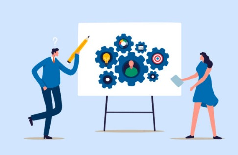
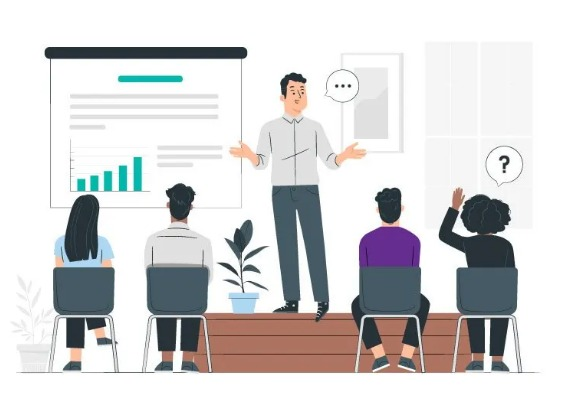

ORIGEN
La empresa capacitadora, llamada CapacitaT, tiene su origen en la necesidad creciente del mercado laboral de contar con
profesionales altamente capacitados en diversas áreas.
BASES
Sus bases se fundamentan en la experiencia y conocimientos de un grupo selecto de capacitadores expertos,
quienes comparten su saber en tecnología, marketing, gestión empresarial, y más.
HISTORIA
La historia de CapacitaT se enriquece con su compromiso de brindar soluciones de formación eficientes y adaptadas a
las necesidades de sus clientes empresariales.

OBJETIVO
El objetivo principal de la empresa capacitadora es maximizar la cantidad de sesiones de capacitación ofrecidas semanalmente,
optimizando la asignación de capacitadores según su disponibilidad y áreas de especialización. Para lograr esto,
CapacitaT ha desarrollado una aplicación web que permite gestionar de manera integral la asignación de cursos,
la programación de sesiones, la facturación a clientes y el pago a los capacitadores. Además, la empresa se compromete a
mantener un estándar de calidad en la formación impartida y en la relación con sus clientes y colaboradores.

Cursos
Ventas
Objetivos del Curso:
Desarrollar habilidades de comunicación efectiva y persuasión.
Aprender técnicas de negociación y cierre de ventas.
Entender el proceso de ventas desde la prospección hasta el servicio postventa.
Mejorar la gestión de relaciones con clientes (CRM) y el seguimiento de ventas.
Contenido del Curso:
Introducción a las Ventas: Conceptos básicos y la importancia del rol de ventas en una empresa.
Prospección de Ventas: Estrategias para identificar y atraer clientes potenciales.
Técnicas de Ventas: Métodos comprobados para presentar productos y persuadir a los clientes.
Negociación y Cierre: Tácticas para superar objeciones y cerrar acuerdos.
Gestión de Clientes y CRM: Uso de herramientas de CRM para mejorar la relación con el cliente y aumentar las ventas.
Análisis de Ventas: Evaluación del desempeño de ventas y ajuste de estrategias.
Metodología:
Clases interactivas con ejercicios prácticos y role-playing.
Estudio de casos reales y simulaciones de situaciones de venta.
Feedback y coaching personalizado para mejorar técnicas individuales.
Uso de herramientas digitales para la gestión de ventas y seguimiento de resultados.
Dirigido a:
Profesionales de ventas que buscan mejorar sus habilidades y resultados.
Individuos interesados en iniciar una carrera en ventas.
Empresas que desean capacitar a su equipo de ventas para mejorar su rendimiento.
Administración
Objetivos del Curso:
Comprender las funciones y roles clave de la administración.
Aprender a planificar y organizar recursos eficientemente.
Desarrollar habilidades de liderazgo y gestión de equipos.
Analizar y mejorar procesos operativos.
Fomentar la toma de decisiones estratégicas y la resolución de problemas.
Contenido del Curso:
Fundamentos de Administración: Introducción a los conceptos básicos de la administración y su importancia en el éxito empresarial.
Planificación Estratégica: Métodos para establecer objetivos a largo plazo y desarrollar planes para alcanzarlos.
Organización de Recursos: Técnicas para la asignación óptima de recursos humanos, financieros y materiales.
Liderazgo y Gestión de Equipos: Estrategias para liderar equipos, motivar al personal y gestionar el talento.
Operaciones y Procesos: Herramientas para analizar y mejorar los procesos operativos y de producción.
Toma de Decisiones: Enfoques para tomar decisiones informadas y resolver problemas complejos.
Metodología:
Clases teóricas con profesionales experimentados.
Estudios de caso y análisis de situaciones reales de negocios.
Ejercicios prácticos y simulaciones de gestión.
Proyectos individuales y en grupo para aplicar los conocimientos adquiridos.
Dirigido a:
Empresarios y directivos que buscan mejorar sus habilidades gerenciales.
Emprendedores que desean adquirir conocimientos esenciales para iniciar y administrar un negocio exitoso.
Profesionales que aspiran a ascender a puestos de gestión o mejorar su desempeño actual.
Liderazgo y conmunicacion
Objetivos del Curso:
Mejorar las habilidades de comunicación interpersonal y grupal.
Desarrollar estrategias de liderazgo para alcanzar objetivos organizacionales.
Aprender a gestionar equipos y fomentar un ambiente laboral positivo.
Contenido del Curso:
Fundamentos de Liderazgo: Exploración de diferentes estilos de liderazgo y cómo aplicarlos en distintos contextos.
Comunicación Efectiva: Técnicas para mejorar la claridad y eficacia en la comunicación con equipos de trabajo.
Toma de Decisiones: Métodos para tomar decisiones informadas y orientadas a la coordinación y administración de recursos.
Gestión de Conflictos: Estrategias para manejar desacuerdos y promover la resolución de conflictos de manera constructiva.
Motivación y Delegación: Aprender a motivar al personal y delegar tareas de manera eficiente.
Metodología:
Clases teóricas y prácticas con profesionales experimentados.
Ejercicios de role-playing y simulaciones de liderazgo.
Proyectos individuales y en grupo para aplicar los conocimientos adquiridos.
Dirigido a:
Profesionales que buscan mejorar sus habilidades de liderazgo y comunicación.
Gerentes y supervisores que desean liderar equipos más efectivos.
Cualquier persona interesada en desarrollar habilidades para una mejor gestión de equipos y comunicación en el entorno laboral.
Directivos y Gerentes
Objetivos del Curso:
Implantar y reforzar técnicas de gestión que impacten positivamente en la administración y el liderazgo.
Actualizar a los gerentes para responder a nuevas funciones y condiciones del mercado.
Apoyar con resultados a los objetivos estratégicos de la organización.
Contenido del Curso:
Gestión y Liderazgo: Principios básicos de la gestión y cómo estos impactan en la administración y el aspecto humano de la organización.
Desarrollo Estratégico: Actualización sobre las nuevas funciones y roles de los directivos en el contexto actual.
Habilidades Directivas: Técnicas avanzadas para la toma de decisiones, la comunicación efectiva y la gestión de equipos.
Metodología:
Clases teóricas y prácticas con profesionales experimentados en el área de gestión.
Estudios de caso y análisis de situaciones reales de negocios.
Ejercicios prácticos y simulaciones de gestión.
Dirigido a:
Directivos y gerentes que buscan actualizar y mejorar sus habilidades de gestión.
Profesionales que aspiran a ocupar posiciones de liderazgo dentro de su organización.
Líderes de equipo que desean mejorar su desempeño y contribuir al éxito de su empresa.
Servicio al cliente
Objetivos del Curso:
Entender la importancia de un servicio al cliente de calidad.
Desarrollar habilidades para manejar situaciones desafiantes y comunicarse efectivamente.
Aprender estrategias para construir y mantener la lealtad del cliente.
Contenido del Curso:
Principios de Servicio al Cliente: Fundamentos de la atención al cliente y la calidad en el servicio.
Comunicación con el Cliente: Técnicas de comunicación impactante para interactuar con los clientes.
Manejo de Situaciones Difíciles: Estrategias para resolver quejas y problemas de manera efectiva.
Fidelización de Clientes: Métodos para construir relaciones duraderas y lealtad de marca.
Metodología:
Clases interactivas con ejercicios prácticos y role-playing.
Análisis de casos reales y simulaciones de situaciones de servicio al cliente.
Evaluación continua y retroalimentación para mejorar las habilidades.
Dirigido a:
Profesionales de atención al cliente que buscan mejorar sus habilidades.
Equipos de soporte que desean ofrecer un servicio excepcional.
Cualquier persona interesada en aprender sobre la excelencia en servicio al cliente.
Recursos humanos
Objetivos del Curso:
Entender los objetivos, funciones y metodología aplicables a la administración de recursos humanos.
Incorporar las últimas tendencias y conceptos actualizados en la gestión de personas.
Comprender cómo se agrega valor competitivo a través del desarrollo e implementación de las mejores prácticas de gestión.
Contenido del Curso:
Fundamentos de Recursos Humanos: Introducción a los principios y prácticas esenciales en la gestión de recursos humanos.
Reclutamiento y Selección: Técnicas para atraer y seleccionar al mejor talento.
Desarrollo y Capacitación: Estrategias para el desarrollo profesional y la capacitación efectiva de los empleados.
Evaluación del Desempeño: Métodos para evaluar y mejorar el rendimiento laboral.
Relaciones Laborales: Gestión de las relaciones entre la empresa, los empleados y los sindicatos.
Metodología:
Clases teóricas y prácticas impartidas por consultores especialistas en la materia.
Estudios de caso y análisis de situaciones reales.
Ejercicios prácticos y uso de formatos importantes para la implementación de estrategias de recursos humanos.
Dirigido a:
Profesionales de recursos humanos que buscan actualizar sus conocimientos.
Gerentes y directivos interesados en mejorar la gestión del talento en sus organizaciones.
Personas que desean adquirir conocimientos en recursos humanos para su desarrollo profesional